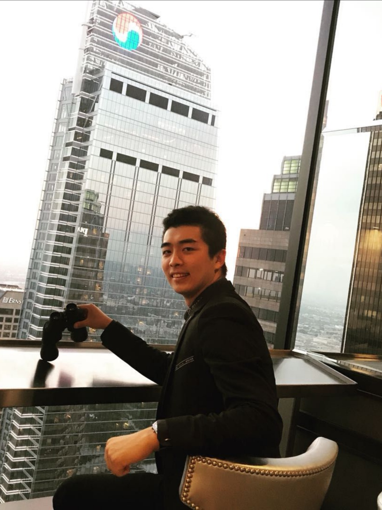
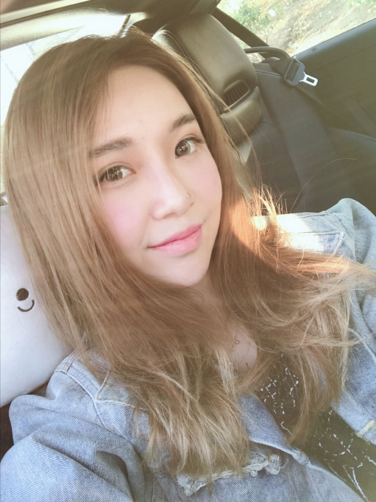
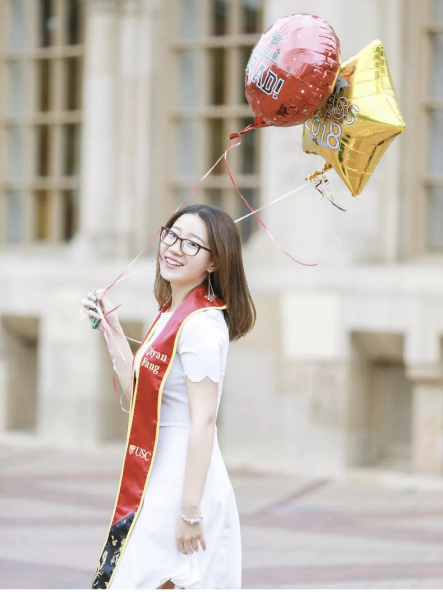

主席团成员
毕业主席团成员介绍

姓名：高嘉辰
职务：2017-2018届 主席
学院：USC Davis School of Gerontology
专业：Gerontology Management Service
介绍：吉林大学洛杉矶校友会理事长，美国华人社团联合会青年委员会副会长，美国吉林经贸文化联合会秘书长，Golden sunset international Founder

姓名：孙诗达
职务：2017-2018届 副主席
学院：USC Rossier School of Education
专业：Teach English as Second Language
介绍：现从事金融和电影，曾代表南加州大学参加《一站到底——世界名校争霸赛》获得优异成绩。

姓名：方琦雁
职务：2017-2018届 副主席
学院：USC Rossier School of Education
专业：Teach English as Second Language

姓名：宋世杰
职务：2017-2018届 副主席
学院：USC Viterbi School of Engineering
专业：Data Informatics